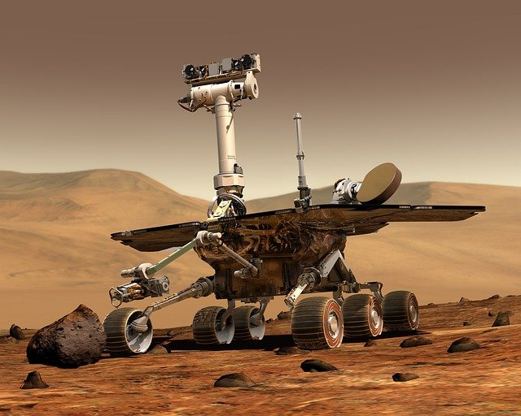
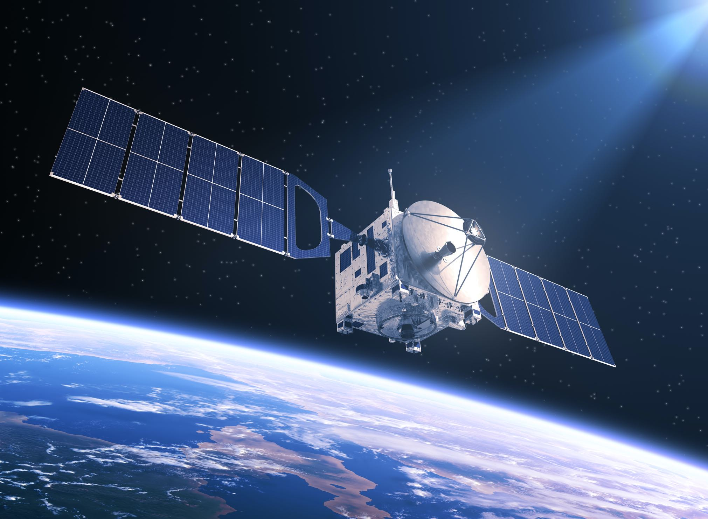

 Robotic explorers visit places in space that human beings are unable to reach, they are launched into space by rocket and they travel vast distance into space. There are various types of robotic explorers and they differ according to the type of space mission.
An Orbiter flies around a planet repeatedly. It does this to take time as it studies its target. Orbiters have visited the moon and other planets, except for two planets which are Neptune and Uranus.
 Space satellites carry out tasks like beaming Tv signals, gathering information for weather forcasts and spying for the millitary. there are over 1000 satellites that are flying around the earth. Satellites are hundreds of miles above the earth, some are lower than the others while others are far away some of the satellites which are far are Tv signal satellites, weather satellites and phone signal satellites.